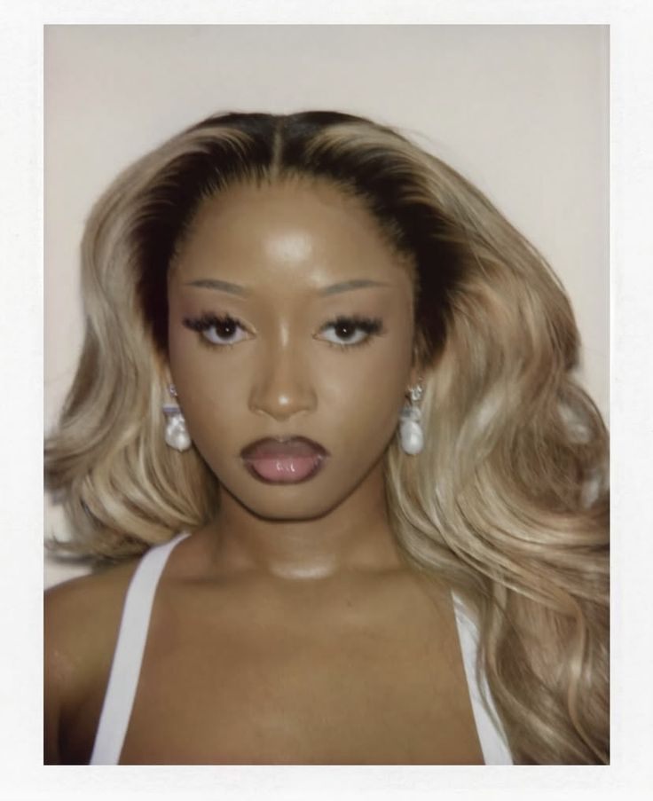

Who We Are
CakeZone is a premier artisan bakery dedicated to creating beautiful, delicious cakes for every occassion. Founded in 2026, we believe that every celebration deserves a cake as extraordinary as the moment itself.
We combine time-honoured baking techniques with contemporary design to produce cakes that are not only visually stunning but irresistibly delicious. Each creation is handcrafted in small batches using only the finest ingredients - because quality is never compromised at CakeZone.
From intimate birthday cakes to grand wedding centrepieces, we bring artistry, passion and precision to every order. Every cake we make is a labour of love - and it shows in every bite.
Our Values
Quality First
We use only premium, fresh ingredients. No artificial shortcuts - ever.
Creativity
Every acke is a canvas. We bring imagination and artistry to each design.
Customer Joy
Your satisfaction is our greatest reward. We go above and beyond for every client.
Community
We are proud to serve Francistown and the wider Botswana community with love.
Meet Our Team

Lungelihle Zwane
With over 10 years of professional baking experience, Maduo founded CakeZone to bring world-class cakeartistry to Botswana. She trained in Paris and brings a refined European technique to every creation.
Naquueda Dayel
Waffles is the creative force behind CakeZone's signature custom designs. Her eye for the detail and passion for edible art ensures every cake is a true masterpiece.